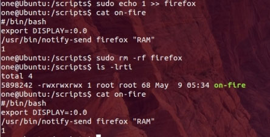

Working with Links

There are two kinds of links in a Linux filesystem: hard links and soft links. We will explain both of them in more detail below.
Hard Links
A hard link links a filename to the place on the drive where the file is stored (reference to an inode). It is merely an additional name for an existing file. Each file can have more than one hard link, but it must have at least one. If no links to the file exist, the file is deleted and the space on the drive is freed up for other files. However, the data in the file is still there and can be recovered as long as it is not written over.
Every filename on the system is a hard link. Hard links cannot point to directories, soft links, characters or block devices, pipes or sockets. If more than one hard link points to a file, they must be on the same filesystem. To create a link Linux utilizes two commands: link and The link command is used solely for hard links. It calls the “link()” system function and does not perform error checking when attempting to create the link. In contrast, ln has error checking and can create both hard and soft links.
The following command creates three hard links named “link1”, “link2” and “link3” to the file “test”:
“test”: “test”: “test”: “test”: “test”: “test”: “test”: “test”: “test”: “test”: “test”: “test”: “test”: “test”: “test”: “test”:
The output of ls -i shows two columns: the inode number and the filename is short for -inode). You can see that the inode number is the same for the four files, and link1, link2, link3 and test point to the same inode.
inode. inode. inode. inode. inode. inode. inode. inode. inode. inode. inode. inode. inode. inode.
Furthermore, the stat command gives more detailed information about the entry.
To create a soft link in Linux, we will use the same ln utility but with the -s option. -s is short for—symbolic.
for—symbolic. for—symbolic. for—symbolic. for—symbolic. for—symbolic. for—symbolic. for—symbolic. for—symbolic. for—symbolic. for—symbolic. for—symbolic. for—symbolic. for—symbolic. for—symbolic. for—symbolic. for—symbolic. for—symbolic. for—symbolic. for—symbolic. for—symbolic.
Again, the output of ls -i shows two columns: the inode number and the filename. You will see that the inode number is different for the four files, and softlink1, softlink2, softlink3, and test point to different inodes.
inodes. inodes. inodes. inodes. inodes. inodes. inodes. inodes. inodes. inodes. inodes. inodes. inodes. inodes.
If you invoke the ls command with the option -l (for long format) the output is as shown below. The left-most column starts with an “l” for link, and the right-most column shows the name of the file the soft link points to.
to. to. to. to. to. to. to. to. to. to. to. to. to. to. to. to. to. to. to. to. to. to. to. to. to. to. to. to. to. to. to. to. to. to. to. to. to. to.
Practical Example
In this example we will look at how to connect two files using links, and how to unlink them again. First, create a file “file1” using echo and redirecting the output.
output. output. output. output. output. output. output. output. output. output. output. output. output. output. output. output.
Next, link “file2” to “file1” and output the contents of “file2” to
Now they are both the same file. Let’s make a change to “file2” and see what happens.
happens. happens. happens. happens. happens. happens. happens. happens. happens. happens. happens. happens. happens. happens. happens. happens. happens. happens. happens. happens.
As you can see from the image below, “file1” and “file2” are both treated as the same file.
Unlinking “file1” deletes the hard link to “file1” but “file2” is still there and the file will not be deleted.
deleted. deleted. deleted. deleted. deleted. deleted. deleted.
Unlinking “file2” deletes the hard link to “file2” and also deletes the file. The file no longer exists and the space it took up on the hard drive is marked for overwriting.
overwriting. overwriting. overwriting. overwriting. overwriting. overwriting.